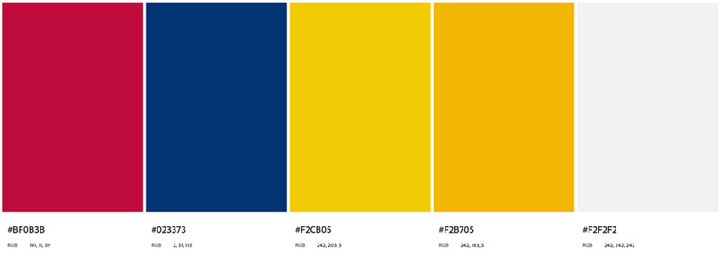
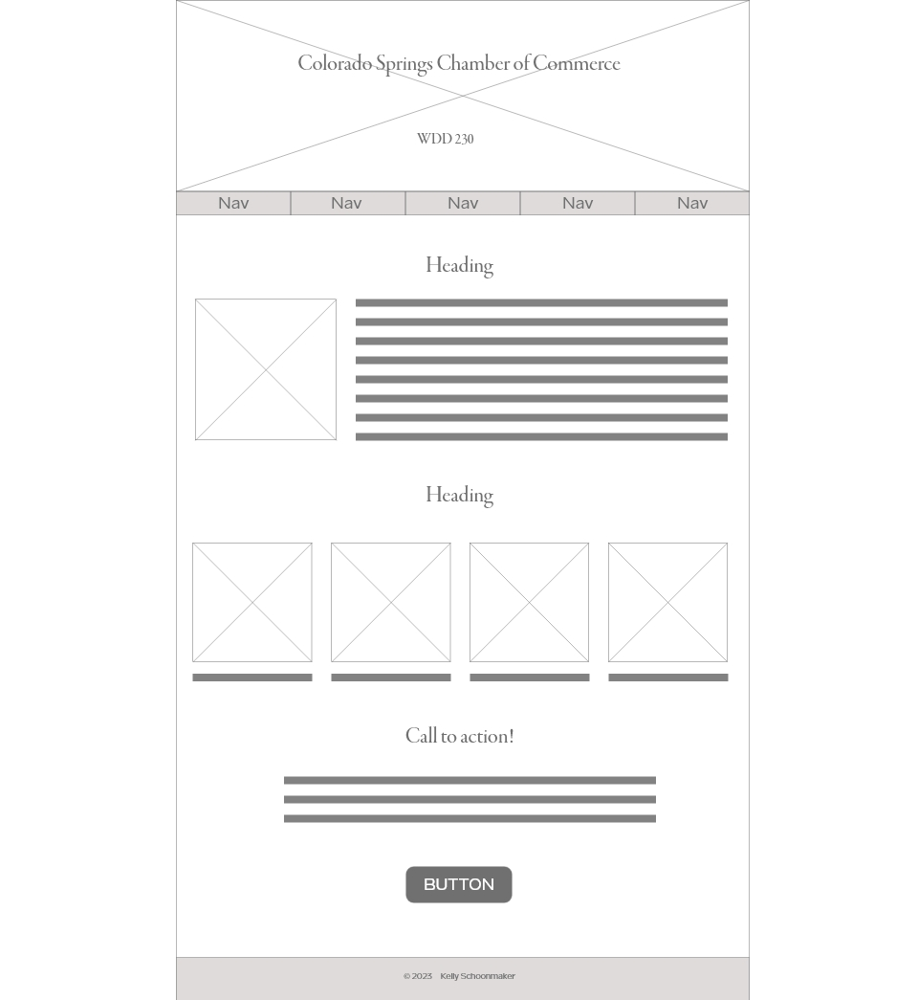
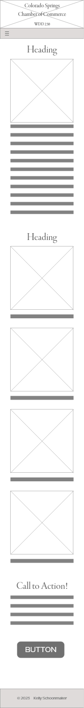

Purpose
This website is the central hub of information for current and prospective members of the Colorado Springs Chamber of Commerce. It is a place that provides information, and gives a starting point from which individuals and companies can coordinate meetings and events for Chamber of Commerce members, and other Colorado Springs businesses.
Scenarios
Questions that might be asked by the target audience:
- How can the Chamber of Commerce help me grow my business?
- Who are the current members of the Chamber of Commerce?
- What events are happening soon?
Color Schema
The color scheme is derived from the Colorado State flag

Typography
Unna will be used for headings.
Lato will be used for body text.
Wireframe
Wireframe for the larger desktop view.

Wireframe for the smaller mobile view.
